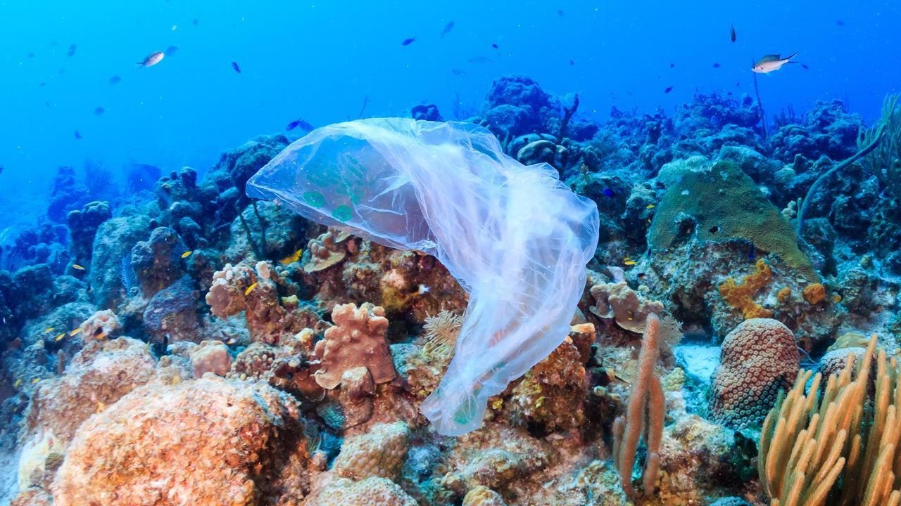

Learn about just how much plastic is in the ocean, how it impacts marine life, and how we can all help protect our oceans.
A Tesla Cybertruck is 1 ton. We have about 8 million Cybertrucks worth of plastics in our ocean. This is a result of the complacency and wasteful habits we have adopted.
Why does this matter? Aside from the harming of marine wildlife, it also contaminates water bodies, degrades habitats and contributes to climate change. This destruction of the ocean in the form of baggies, bottles and toys will trickle back up to humans. Not only will our pristine, aesthetic oceans be gone, along with the unique and beautiful wildlife, but the bodies of water will become toxic and impact our own health.
There are many ways we can reduce ocean pollution:
Join ocean clean-up efforts and support organizations dedicated to ocean conservation. Together, we can make a difference!
Ocean Conservancy